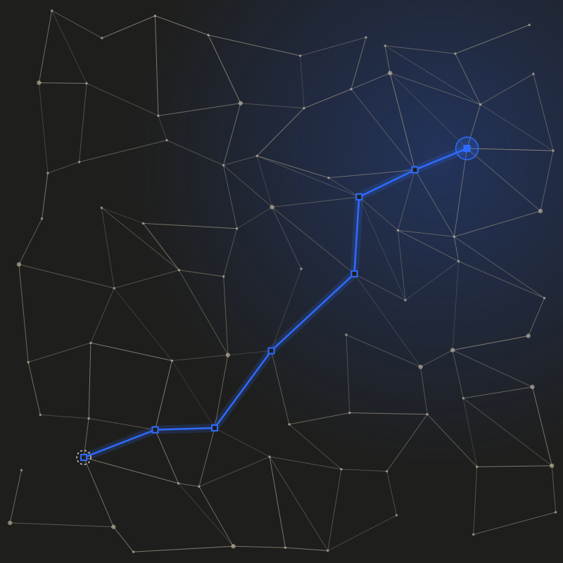

AI-boosted development
Standard card: translucent background, 14% hairline, 12px radius.
Design system v2.3 · johannlaqua.com
Reference page for the site's design. Colours, type and spacing come straight from
src/tokens.css, the same file the site uses: this page cannot drift from the site.
Colours
Components never use these values directly: they go through the semantic tokens
(--surface, --text, --text-muted, --rule, --link…),
redefined by .tone-charcoal (default) and .tone-sand.
Typography
Geist
Instrument Serif
JetBrains Mono
--text-heroI build and I secure.--text-5xl 72A project--text-4xl 60Section titles--text-3xl 48Page titles--text-2xl 3610+ · Red & Blue · AI-first--text-xl 24Card titles, ledes--text-lg 21Subtitles--text-md 18Article text--text-base 16Body text, buttons--text-sm 14Navigation, metadata--text-xs 12Tracked-caps labelSpacing and radii
--space-1 · 4--space-2 · 8--space-3 · 12--space-4 · 16--space-5 · 24--space-6 · 32--space-7 · 48--space-8 · 64--space-9 · 96--space-10 · 128Components
About
A developer who thinks like an attacker.
Standard card: translucent background, 14% hairline, 12px radius.
Light-blue icon on a veiled tile, 24px title, 14px secondary text.
Apr 3, 2026 security
Post card: mono date, tag, blue link.
Read the post
The curve is a diagram, not data: it never carries an invented figure.
Signature visual

Nodes and links (a system), a dashed entry point, a blue path hopping from node to node up to the target. It is how an attacker maps a system.
Generated as SVG from a fixed seed: identical on every build, no image to load. The geometry lives in src/network-field.js, used by the site (NetworkField.astro) and by the assets/network-field.svg export.
Brand mark (blue bolt) and favicon.
Rules
Actions, links, the curve and the attack path. If two blue things compete on one screen, remove one.
One italic serif part per heading, always at the end. Never mid-sentence.
Any new colour or size goes into src/tokens.css first, then the README. Components only use tokens.
Text at least 4.5:1. Pure #2F6BFF is never used for small text. Animations are off when the user prefers reduced motion.